20 kHz
Objectif : concevoir ma propre enceinte.
B&O · KEF · DALI · Focal · Yamaha · Hitachi
Paul Signe · Mon vision board en ville : ce qui m'inspire et me fait avancer
> Clique sur un bâtiment · molette pour zoomer · glisse pour te déplacer <
Le vision board de Paul Signe
Ma ville, c'est mon vision board : chaque bâtiment ouvre une de mes passions. Mon parcours, mes missions et mon CV sont dans le portfolio pro.
Mon top 4, puis les 125 autres albums que j'écoute le plus, rangés par style. La musique, c'est aussi ce que je fais : de la MAO, la musique assistée par ordinateur.
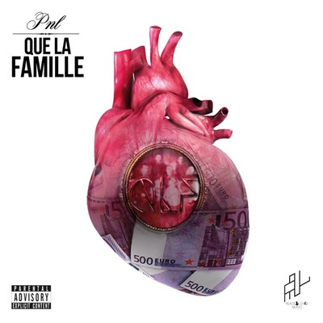
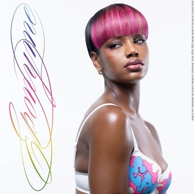
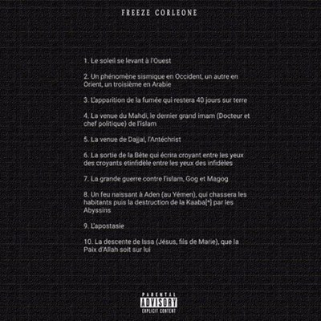
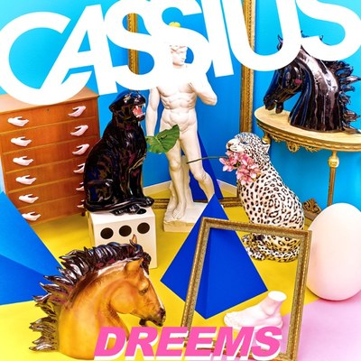

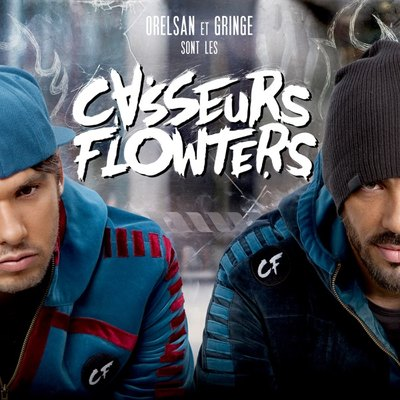
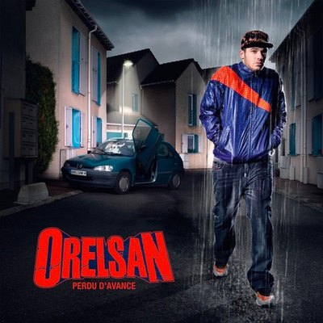
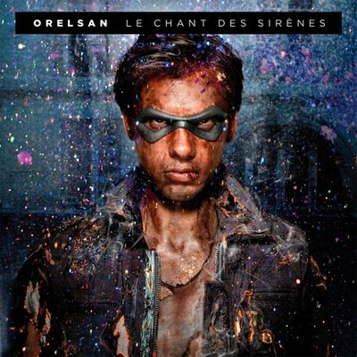
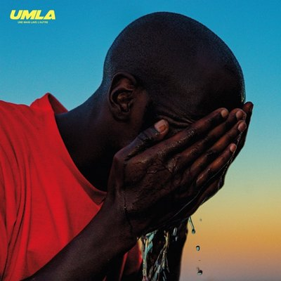
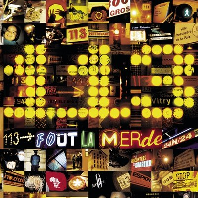
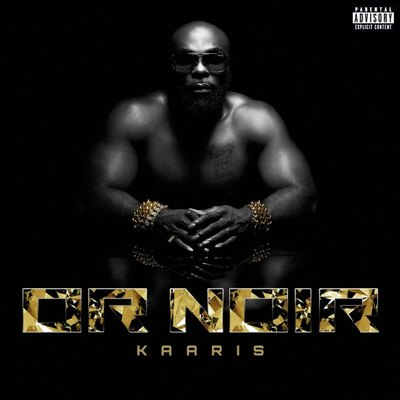
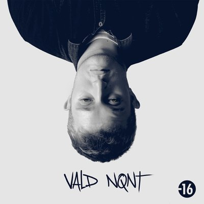
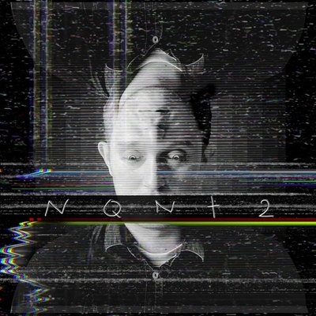
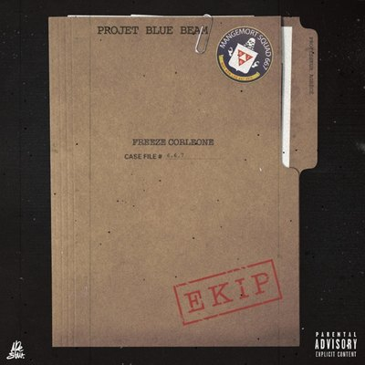
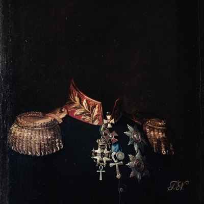
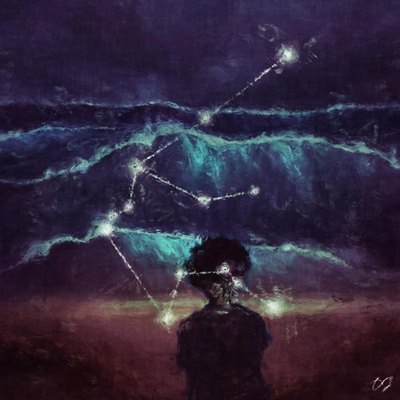
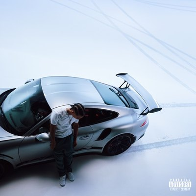
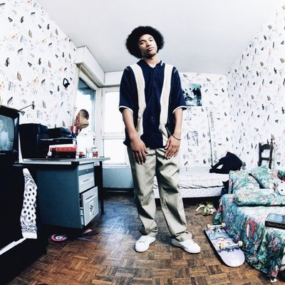
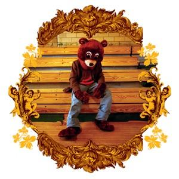
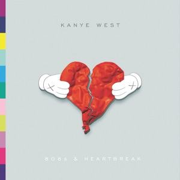
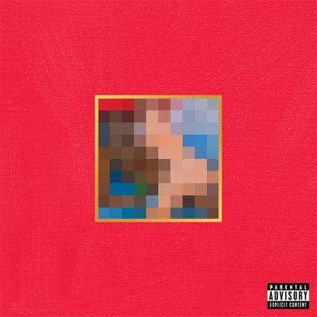
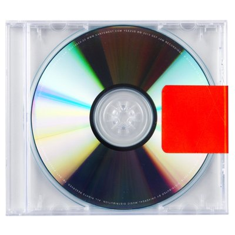
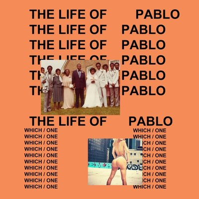


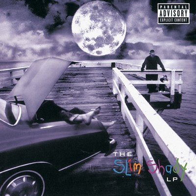
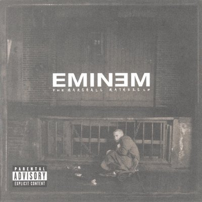

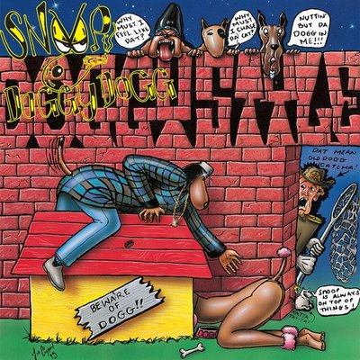
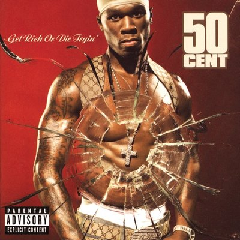

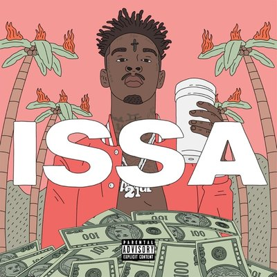
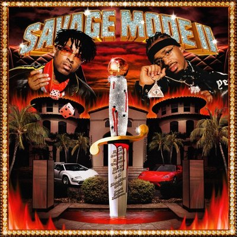
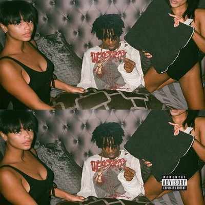
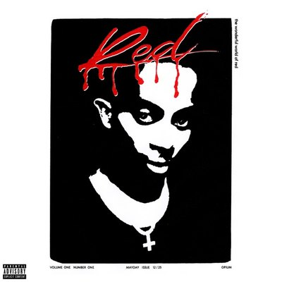
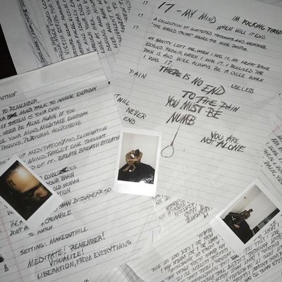
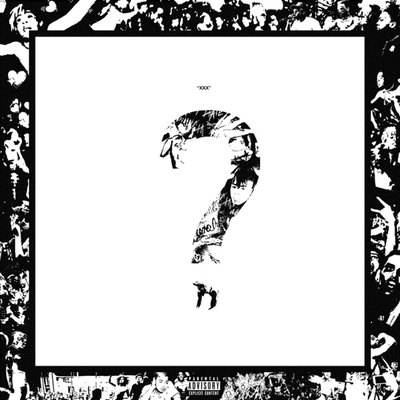
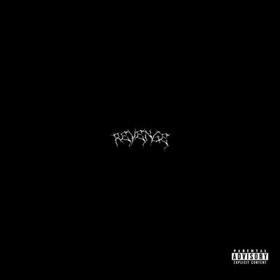
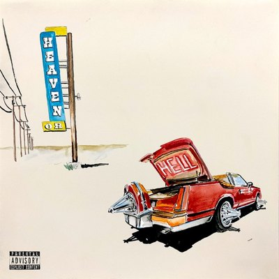
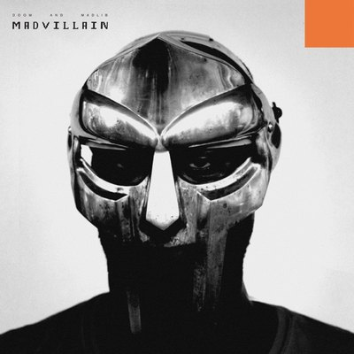
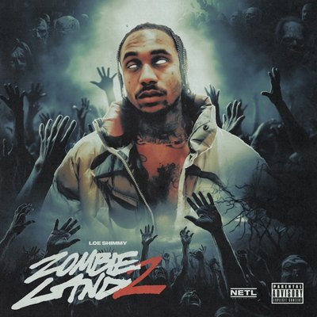
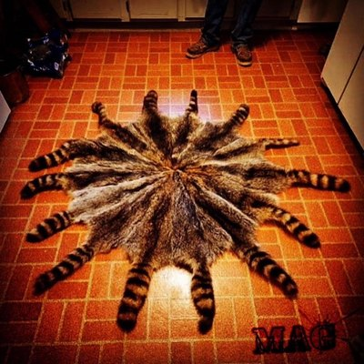
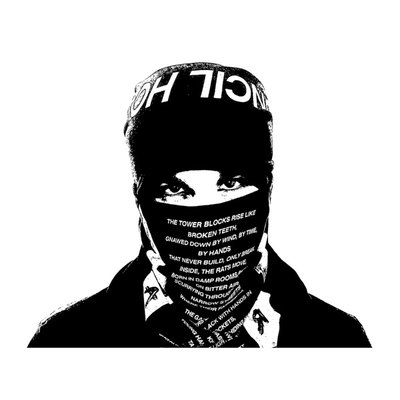
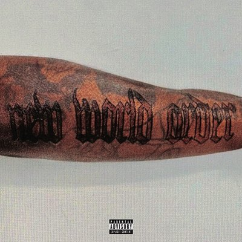
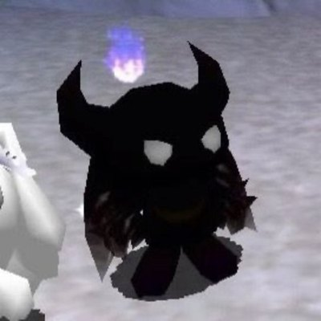
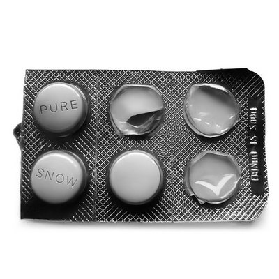
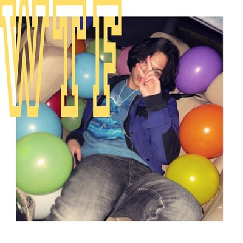


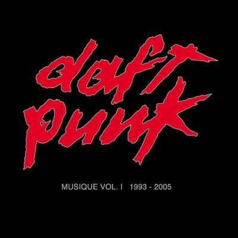
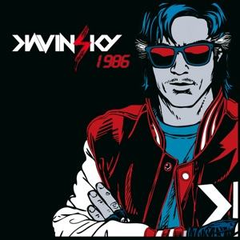


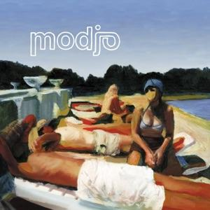
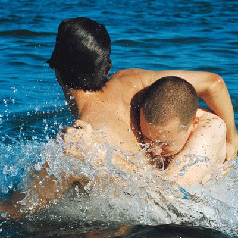


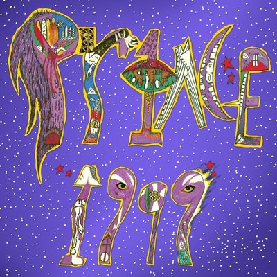


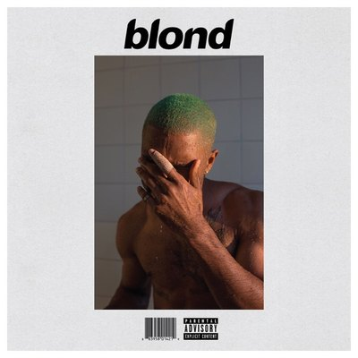


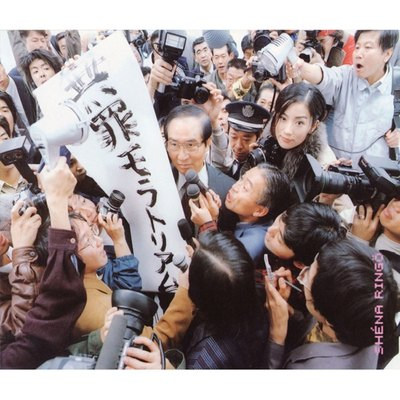

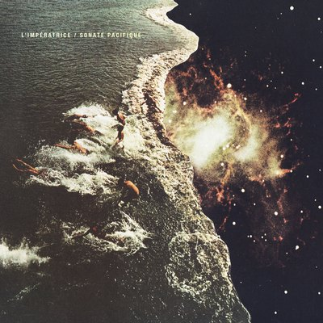


Pochettes d'album : © leurs ayants droit.
La musique d'un côté, le moyen de l'écouter de l'autre : c'est là que la mécanique et l'électronique entrent en jeu. Voici mon matériel, puis celui qui m'inspire.


Objectif : concevoir ma propre enceinte.
B&O · KEF · DALI · Focal · Yamaha · Hitachi
Crédits des photos : the little audio company (photo, CC BY 2.0) · jikatu (photo, CC BY-SA 2.0) · BitBoy (photo, CC BY 2.0) · mabecerra (photo, CC BY 2.0) · nimble photography (photo, CC BY 2.0) · chocolatedazzles (photo, CC BY 2.0) · TimWilson (photo, CC BY 2.0).
Photos de mon matériel : BeoSound Century, ma photo · FiiO M21 © FiiO · Edition XS © HIFIMAN.
De l'ultra-luxe aux petites marques, tout ce qui m'inspire, accroché sur le même portant. Passe la souris sur un vêtement (ou touche-le) pour le voir de face. Mon regard de futur ingénieur : une malle ou une selle, ce sont des assemblages précis et des matériaux choisis.


Crédits des photos : Dimitry B (photo, CC BY 2.0) · philos from Athens (photo, CC BY 2.0) · Thomas Leuthard (photo, CC BY 2.0) · 準建築人手札網站 Forgemind ArchiMedia (photo, CC BY 2.0) · Ken Lund (photo, CC BY-SA 2.0) · Brianfit (photo, CC BY 2.0) · John Beans (photo, CC BY 2.0) · henryjose (photo, CC BY 2.0) · dalbera (photo, CC BY 2.0).
Mon top 4, puis mes 35 autres films et séries les mieux notés dans mon journal Letterboxd (4 étoiles et plus), rangés par genre comme sur une étagère. Passe la souris sur une tranche (ou touche-la) pour sortir le film.


Affiches de films : © leurs ayants droit.
Mon club depuis que je suis petit. À l'époque, je rêvais d'ailleurs de devenir footballeur.
Les matchs, ce sont des souvenirs en famille et entre amis, des joies et beaucoup de déceptions aussi. Supporter Nantes, ça apprend la fidélité : on reste, même quand ça perd.
C'est avec ce club que j'ai compris ce que veut dire appartenir à un groupe. Je ne serai pas footballeur, mais ce qui me plaisait dans ce rêve, faire partie d'une équipe, reste ce que je cherche.
Le stade du FC Nantes, dessiné dans la ville avec ses tribunes, son toit et sa pelouse.
Emiliano Sala et Paul Pogba, deux joueurs qui m'inspirent, sont dans la galerie des inspirations.
Deux footballeurs et deux duos de musique, qui ont réussi par le travail en restant eux-mêmes.
Il n'était pas le joueur le plus doué : il a galéré dans de petits clubs avant de s'imposer à Nantes, uniquement par le travail, respecté de tout le monde. Sa mort en 2019 m'a vraiment marqué. Ce que j'en garde : le travail finit par payer, même quand on n'est pas le plus fort au départ.
Le dab, les coiffures, la joie de jouer. Il s'amuse sur un terrain et assume d'être différent, même quand on le critique. Moi qui ai tendance à me faire discret, j'admire les gens qui osent se montrer.
Deux frères qui ont réussi sans maison de disques et presque sans interviews, en faisant tout eux-mêmes. On peut réussir en restant indépendant, sans oublier d'où l'on vient ni avec qui on a commencé.
Un duo connu dans le monde entier, avec un son et un univers qui ne ressemblent à personne. Ils m'inspirent pour le côté créatif : chercher son propre style plutôt que copier.
Pochettes d'album : © leurs ayants droit.
C'est de là que je viens, et j'en suis fier : c'est la première chose qui me définit quand je me présente.
Une culture à part entière, avec un côté têtu et solidaire dans lequel je me reconnais bien. Têtu quand je bloque sur une réparation et que je refuse de lâcher ; solidaire, c'est ma devise.
Le château des ducs de Bretagne et la tour Bretagne sont dessinés dans la ville. Le FC Nantes a son stade un peu plus loin.
Ça peut faire rire, mais ce bonbon, c'est mon enfance : son goût et son odeur me ramènent tout de suite en arrière. Mes bases, ce sont aussi des choses toutes simples.
Plus tard, j'aimerais habiter à Paris. C'est pour ça que la tour Eiffel et l'arc de Triomphe sont dans ma ville.
Elle scintille chaque minute, et quand on passe la souris dessus. PNL est assis tout en haut.
En haut des Champs-Élysées, à côté de la tour.
Dior, Hermès, Chanel, Margiela : beaucoup des maisons de mon rack sont parisiennes.
Ce que je veux le plus, plus tard : être indépendant financièrement, pour pouvoir voyager quand j'en ai envie, sans avoir à compter.
Être indépendant, pour moi, ce n'est pas être seul : c'est ne dépendre de personne financièrement pour pouvoir profiter avec ceux qui comptent.
Ma devise. Je l'ai choisie parce que j'ai tendance à vouloir tout faire tout seul, alors que les meilleurs moments et les plus gros projets que j'ai vécus, c'était toujours à plusieurs.
Je ne supporte pas qu'on manque de respect à quelqu'un à cause de ce qu'il est. Si je ne devais garder qu'une seule valeur, ce serait celle-là.
On prend les gens comme ils sont et on avance au même rythme que celui qui va le moins vite.
Quand je dis quelque chose à quelqu'un, j'essaie de m'y tenir. Au centre de loisirs, quand on promet un grand jeu aux enfants, il doit avoir lieu.
Une plage recouverte de plastique me choque. Dans un métier technique, on a une part de responsabilité sur ce qu'on fabrique : à mon échelle, ça commence par réparer au lieu de racheter. Et tout le monde ne part pas avec les mêmes chances.